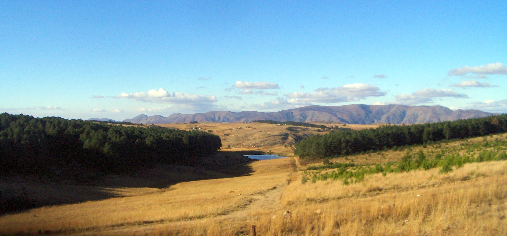

1.24m
People in Eswatini
World Bank · 2024
An independent almanac · Kingdom of Eswatini
The facts on a kingdom of 1.2 million — its economy, its health, its schools, and its power — drawn straight from the primary sources and free of spin.

1.24m
People in Eswatini
World Bank · 2024
$4,089
GDP per capita
World Bank · 2024
25.6%
Adult HIV prevalence — the highest on earth
UNAIDS · 2023
58.9%
Live below the poverty line
World Bank · 2024
35.4%
Unemployment rate
Govt. of Eswatini · 2024
Start here
Every key indicator on Eswatini — economy, health, education, land, and people — gathered on one page, each figure sourced and dated.
Where every number comes from, how we verify it, and how to check our work. No figure without a citation.
Who we are, why this project is nonpartisan, and how to contribute, correct, or support the work.
Our government is complex. Our data shouldn’t be. We gather the numbers that matter, show exactly where they come from, and leave the conclusions to you.